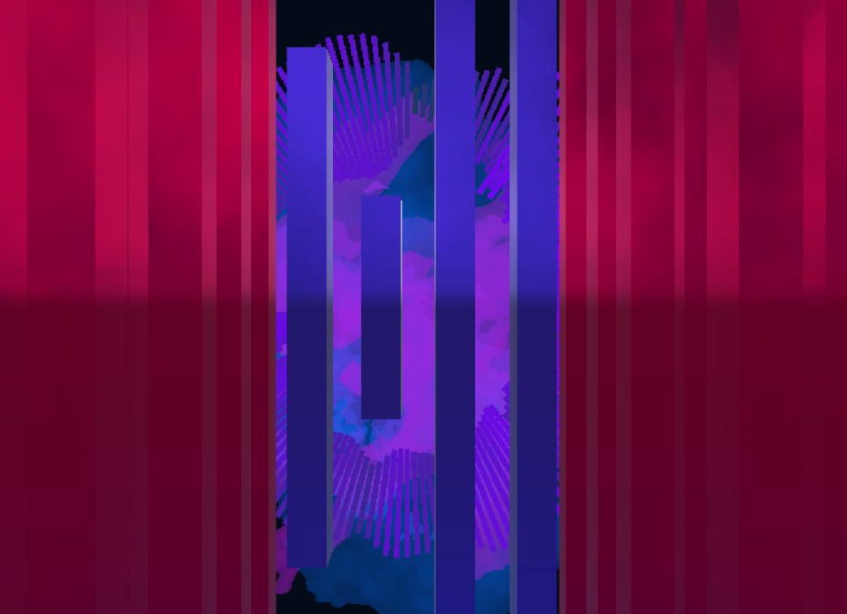
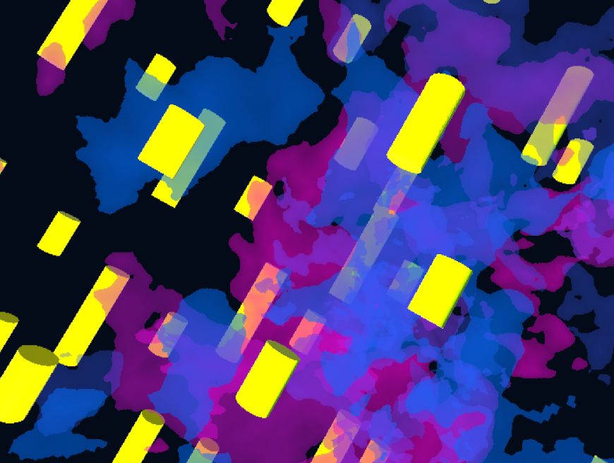
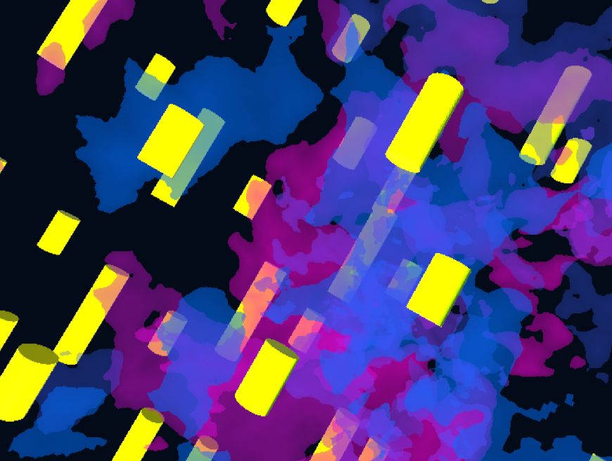

Anja
The audio visualisation of "Anja" by Taco Hemingway was created in Unity 3D. It uses functions that take the volume and pitch and convert them into a visual representation of the song itself.
#unity | #audiovisualisation | #music
 
